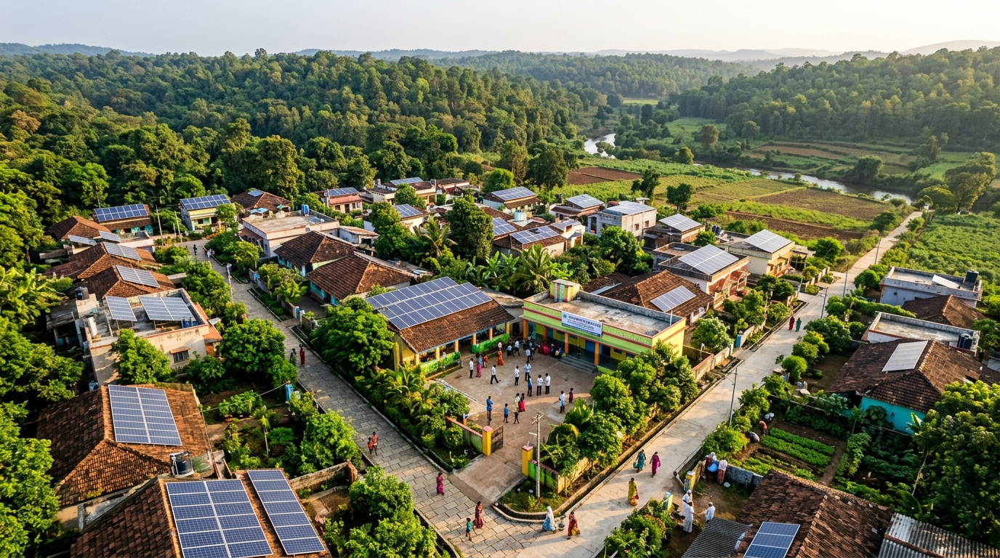
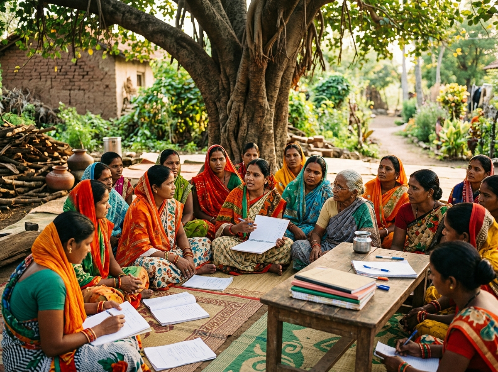
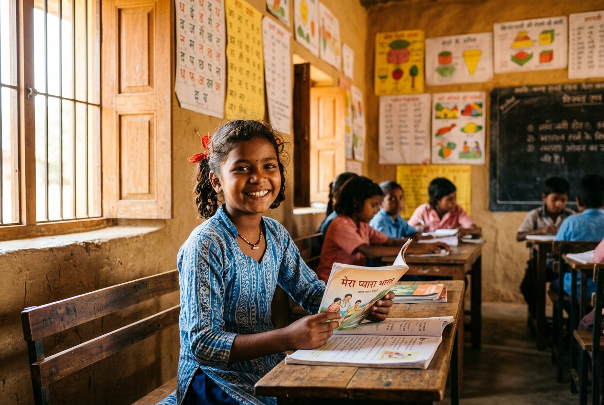
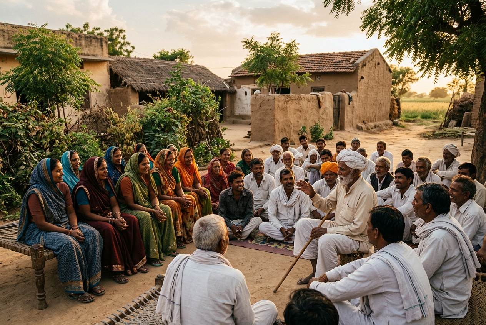
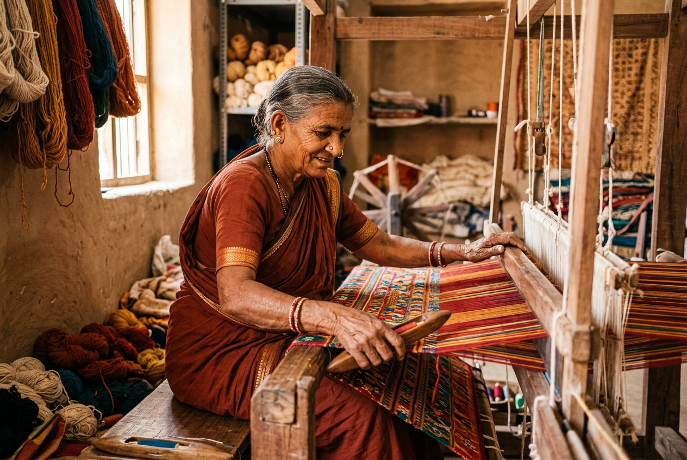
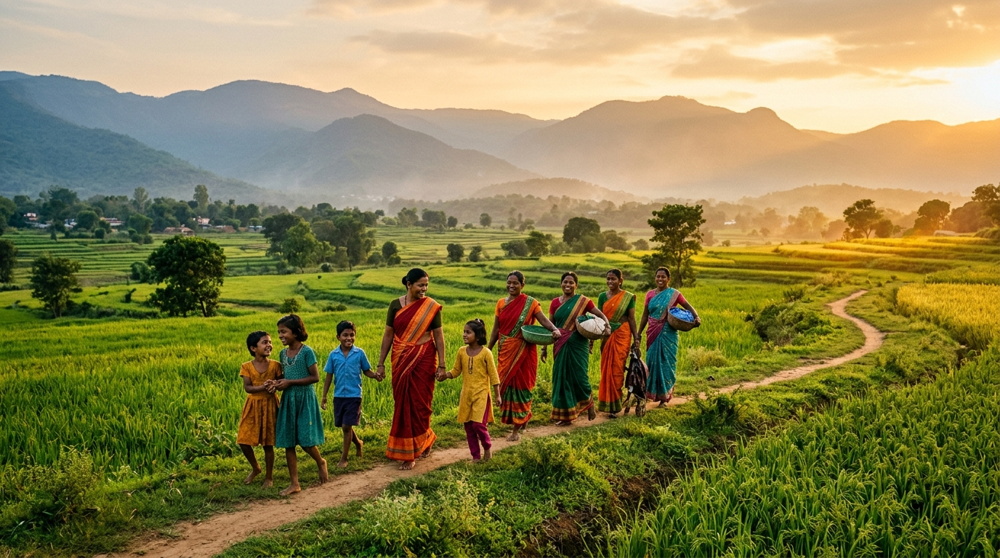

Education · Maharashtra
From a mud-floor school to a university scholarship — Priya's story
How a Bahina learning centre in rural Vidarbha changed the trajectory of an entire family.

Bahina NGO works at the grassroots across India — advancing livelihoods, education, women's empowerment, and ecological resilience in the communities that need it most.
About the Division
Bahina NGO was the first division of the Bahina Foundation, born from the belief that sustainable development begins with listening — deeply and respectfully — to the communities we serve. We do not arrive with solutions; we arrive with questions, and we build answers together.
Across rural India, our teams work in partnership with local self-help groups, village councils, schools and health workers to deliver programmes that are not only impactful in the short term but designed for lasting community ownership. Our approach is evidence-led, community-centred and ecologically aware.
Our Focus Areas
Self-help groups, skill training, microfinance access and market linkages for rural women entrepreneurs across 14 states.
Foundational learning centres, teacher training, digital literacy and scholarship support for first-generation learners in underserved areas.
Watershed management, water harvesting, soil conservation and community-led ecological restoration in semi-arid and forest regions.
Community health workers, maternal care, nutrition programmes and mental health support integrated into village systems.
Natural farming, seed sovereignty, organic transitions and fair-market access for small and marginal farmers in partnership with agricultural universities.
Community rights, legal literacy, Panchayati Raj strengthening and participatory governance training for village leaders and youth.
In the Field





Our Partners & Funders
Take Action
Your support — financial or otherwise — enables Bahina NGO to deepen its work in communities that are ready to lead their own transformation.